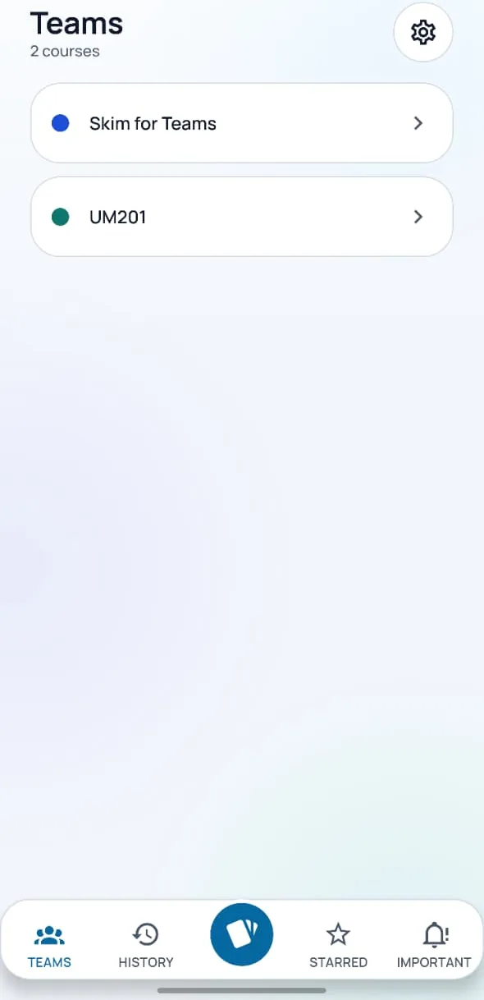
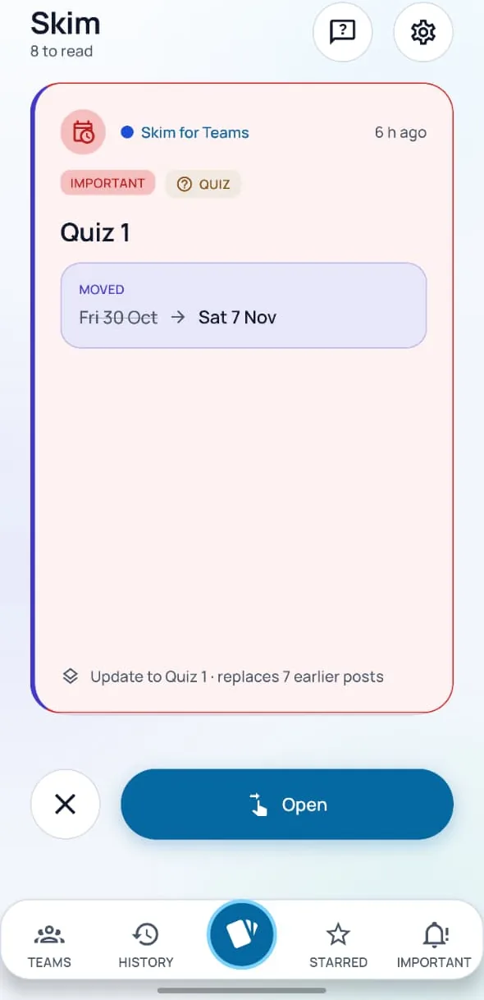
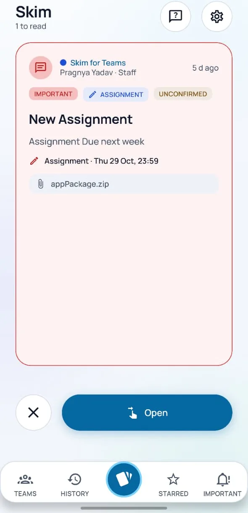
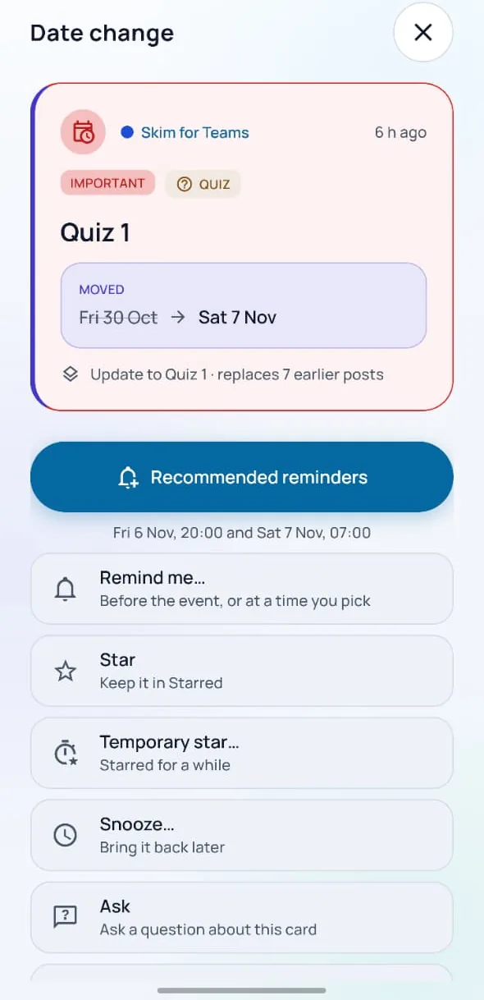
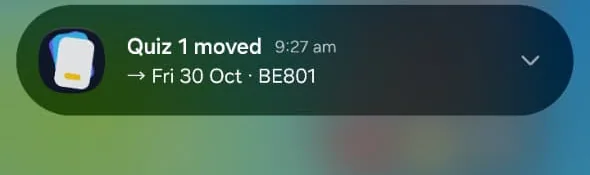
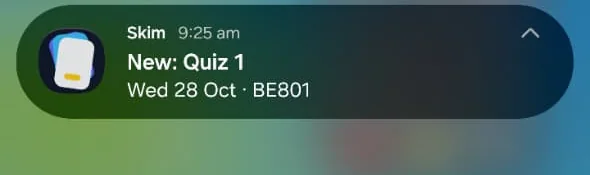
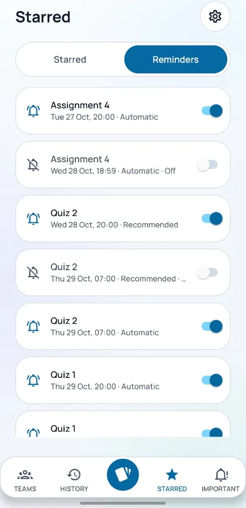
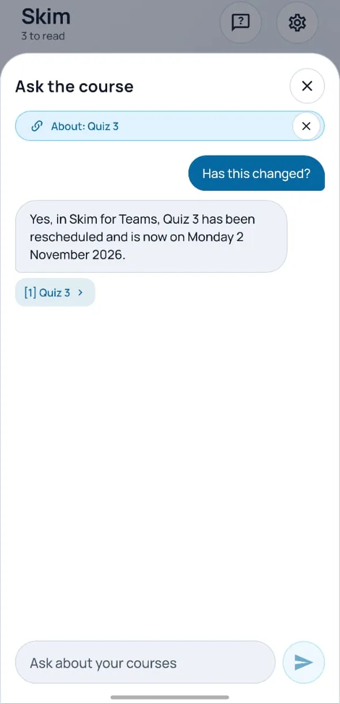
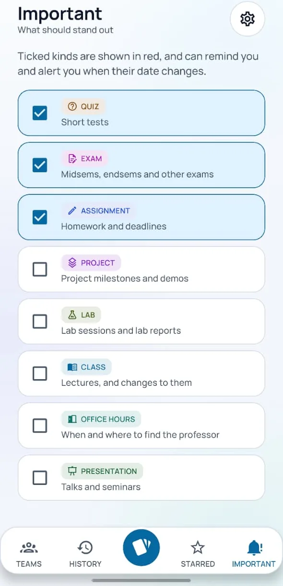

A professor posts in Teams.
Skim is added to the course team once. It quietly reads the standard channels, never private ones. You join your course with a code, and the course shows up in the app.

Early preview · Android · testing phase
Skim turns your course’s Teams posts and files into a deck of cards, with dates, reminders and alerts when a date moves.
Collaborate with us See how it works
Works with courses where Skim has been added.

Skim is added to the course team once. It quietly reads the standard channels, never private ones. You join your course with a code, and the course shows up in the app.

Every post and file that matters becomes a card: the date, the files, a link back to the original. Each kind of event has its own colour, and red is kept for what is important.

Swipe left to dismiss, with undo. Swipe right to open the full card, with reminders, stars, snooze and add-to-calendar. Swipe up to ask a question about it.

Reminders move when a date moves, and every one has a switch. You get an alert when something changes, and when something new arrives, even with the app closed.



Ask in plain words: “When is the next quiz?” Answers come only from your course messages, name the course, and show their sources so you can check them.

Tick the kinds of event that matter. They stand out in red, can remind you automatically, and can alert you when a date moves.

Keep a card, or star it for a day or a week.
Silence a course, set quiet hours, or let only the urgent through.
Your latest cards stay readable without a connection.
Skim is in an early testing phase and currently works with courses where it has been added. We are collaborating with professors, organisations and companies. Plans for organisations are coming; we are not setting prices yet.
Add Skim to your course team once. Students join with a code. You never see what any student read, starred or asked.
Pilot Skim with your team or programme during the testing phase and shape what it becomes. Subscription plans are on the way.
Skim works when your professor adds it to your course team. Send them this page, or write to us and we will reach out.
Or write to pragnyayadav22@gmail.com